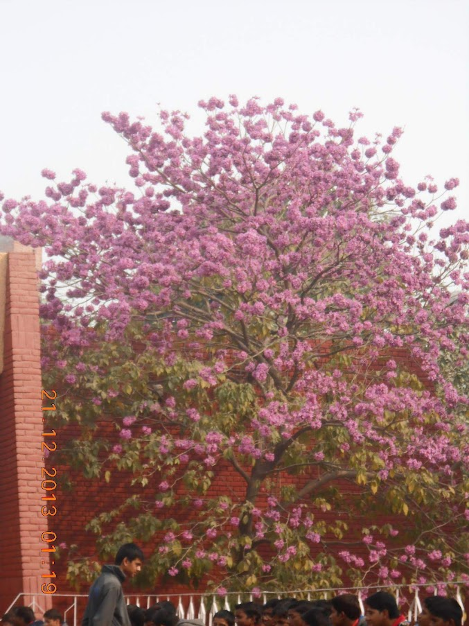
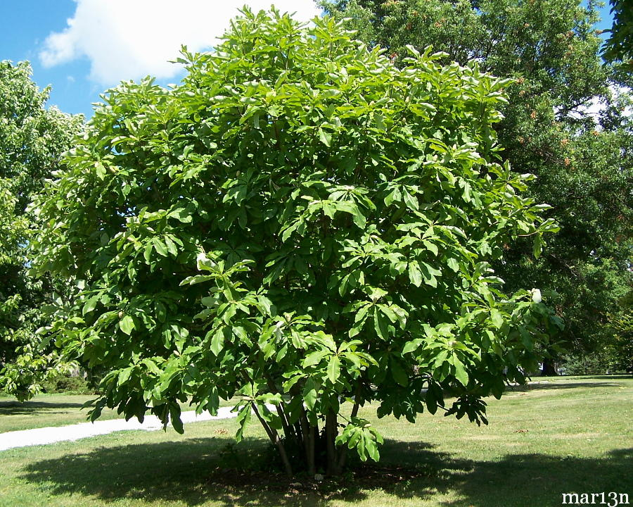
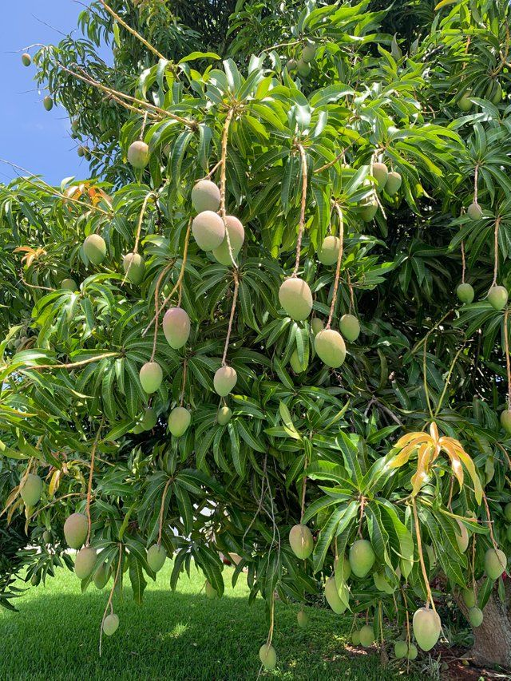
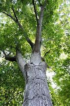
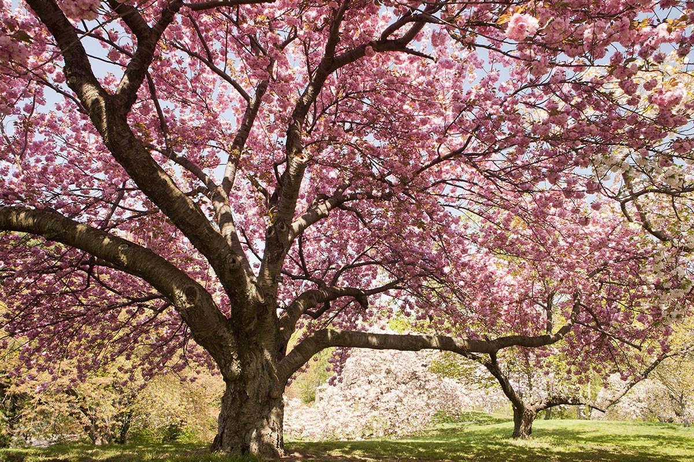
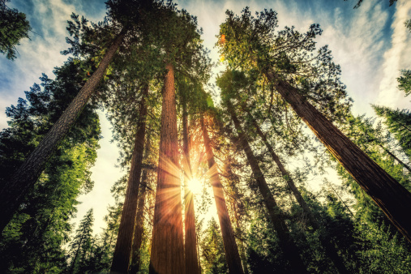
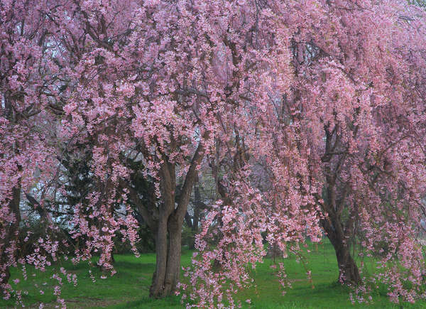

Description: A banyan, also spelled "banian", is a fig that begins its life as an epiphyte,
i.e. a plant that
grows on another plant, when its seed germinates in a crack or crevice of a host tree or edifice.

Name: Pride of India
Scientific Name: Lagerstroemia speciosa
Description: Large tree blooms in hot summer with pink flowers. A postal stamp was issued by
the Indian Postal
Department to commemorate this flower
Name:Snake Plant
Scientific Name: Dracaena trifasciata
Description:Snake plants, also known as “Mother-in-Law’s Tongue” and Sansevieria, are one of the easiest houseplants to take care of.
This succulent plant is very forgiving and perfect for beginners. They even act as indoor air purifiers.

Name: Umbrella Tree
Scientific Name: Schefflera arboricola
Description: The umbrella plant is a multi trunk tree that can grows over 15 metres tall
outdoors and has to
be pruned and topped at some point to keep its size manageable within a home. Its close relative (Schefflera
Actinophylla) has to carefully planted because of its invasive nature and is seen as a weed in certain places.

Name: Mango Tree
Scientific Name: Mangifera indica
Description: Mangifera indica, commonly known as mango, is a species of flowering
plant in the sumac
and poison ivy family Anacardiaceae. Mangoes are believed to have originated from the region between
northwestern Myanmar, Bangladesh, and India.
Name : Makassar Ebony Tree
Scientific Name : Diospyros celibica
Description : Diospyros celebica (commonly known as black ebony, or Makassar ebony) is a species of
flowering tree in the family Ebenaceae that is endemic to the island of Sulawesi in Indonesia.
The common name Makassar ebony is for the main seaport on the island, Makassar.
Makassar ebony wood is variegated, streaky brown and black, and nearly always wide-striped.
It is considered a highly valuable wood for turnery, fine cabinet work, and joinery, and is much sought for
posts in traditional Japanese houses.

Name : White Oak Tree
Scientific Name : Quercus Alba
Description : Quercus Alba (commonly known as white oak tree) is one of the preeminent hardwoods of eastern and central North America.
It is a long-lived oak, native to eastern and central North America and found from Minnesota, Ontario, Quebec, and southern Maine south as far as northern Florida and eastern Texas.
Specimens have been documented to be over 450 years old.
The name comes from the colour of the finished wood.
In the forest it can reach a magnificent height and in the open it develops into a massive broad-topped tree with large branches striking out at wide angles.
ASHOKA VRIKSHA
Scientifically known as SARACA ASOCA
Ashok is one of the most legendary and sacred trees of India. The Scientific name of Sita Ashok is
Saraca asoca, and it belongs to Leguminosae family. This tree is native to Indian subcontinent & it is
found growing naturally in the Western Ghats and the Eastern Himalayas.
Name:
Elder tree
Scientific name
Sambucus nigra
Details
Mature elder trees grow to a height of around 15m and can live for 60 years.
Elder is characterised by its short trunk (bole), and grey-brown, corky, furrowed bark. It has relatively
few branches.
It was thought that if you burned elder wood you would see the Devil, but if you planted elder by your house
it would keep the Devil away.
A picture of Elder tree
Name: NEEM TREE
Scientific Name: Azadirachta indica
Description: Azadirachta indica, commonly known as neem, nimtree or Indian lilac, and in
Nigeria called dogoyaro or dogonyaro, is a tree in the mahogany family Meliaceae.
It is one of two species in the genus Azadirachta, and is native to the Indian subcontinent and most of the
countries in Africa. It is typically grown in tropical and semi-tropical regions.
Neem trees also grow on islands in southern Iran. Its fruits and seeds are the source of neem oil.
Name: Sandalwood
Description:The woods are heavy, yellow, and fine-grained, and, unlike many other aromatic
woods, retain their fragrance for decades.
Sandalwood oil is extracted from the woods for use. Sandalwood is often cited as one of the most expensive woods
in the world.
Both the wood and the oil produce a distinctive fragrance that has been highly valued for centuries.

Name: Cherry Blossoms(Sakura)
Description:
A cherry blossom is a flower of many trees of genus Prunus or Prunus subg. Cerasus.
They are also known as Japanese cherry and Sakura (桜 or 櫻; さくら or サクラ). They generally refer to ornamental
cherry trees,
not to be confused with cherry trees that produce fruit for eating. It is considered the national flower of
Japan.

Name: Pine Tree
Scientific Name: Pinus sylvestris
Description: Pine, (genus Pinus), genus of about 120 species of evergreen conifers of the
pine family (Pinaceae), distributed throughout the world but native primarily to northern temperate regions. The
chief economic value of pines is in the construction and paper-products industries, but they are also sources of
turpentine, rosin, oils, and wood tars. Edible pine seeds, which are sold commercially as pine nuts, piñons, or
pinyons, are produced by several species. Many pines are cultivated as ornamentals, including black, white,
Himalayan, and stone pines, and some are planted in reforestation projects or for windbreaks. Pine-leaf oil,
used medicinally, is a distillation product of the leaves; charcoal, lampblack, and fuel gases are distillation
by-products.

Name: Weeping Cherry
Description:
Few trees are as romantic and elegant as the weeping cherry. With cascading branches festooned with white or pink blossoms in spring, this graceful tree will quickly become the highlight of any backyard. Growing 20 to 30 feet tall, with a 20- to 25-foot spread, it’s small enough to fit almost anywhere.
 MY TREE
MY TREE


.jpg)